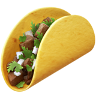
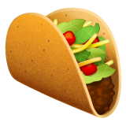
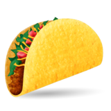
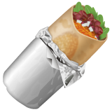

Taco Burrito
I am a professor of Street Food department
at Mexican Cuisine University

Steet food department of Mexican Cuisine University
I can be made with a variety of fillings, including beef, pork, chicken, seafood, beans, vegetables, and cheese, allowing for great versatility and variety
If you only eat one peace of me, your HP will increase by over 40 points. Moreover I can increase your mana points if you suddenly turn out to be a wizard